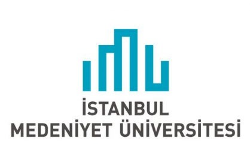
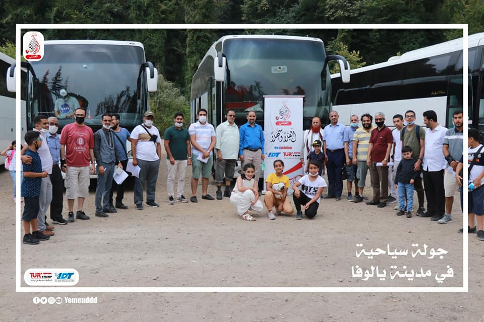

الرئيسية
من نحن
الأخبار ولأنشطة
مجالات العمل
̬
الأوقاف والإستثمار
الدراسات والبحوث
التدريب وبناء القدرات
التعليم
التمكين الإقتصادي
المبادرات المجتمعية
تقارير المشاريع
المركز الإعلامي
̬
معرض الصور
الفيديوهات
التقارير السنوية
تبرع
تواصل معنا
الأخبار والأنشطة
كروت المواد الغذائية
إقرأ المزيد
برنامج رواحل التدريبي
إقرأ المزيد
التعليم
إقرأ المزيد
سفير بلادنا لدى تركيا في زيارة لجمعية الصداقة والتعاون اليمنية – إسطنبول.
إقرأ المزيد
بحضور نائب وزير الداخلية التركي ونائب والي إسطنبول ورئيس دائرة الهجرة، تقيم جمعية الصداقة والتعاون اليمنية-تركيا أمسية رمضانية.
إقرأ المزيد
اختتام الملتقى الطلابي الصيفي
إقرأ المزيد
الدكتور/ محمد الحجاجي في زيارة إلى جمعية الصداقة والتعاون اليمنية – إسطنبول.
إقرأ المزيد
جمعية الصداقة والتعاون اليمنية في زيارة إلى Bursa Uludağ Üniversitesi – بورصة.
إقرأ المزيد

جمعية الصداقة والتعاون اليمنية في زيارة إلى İstanbul Medeniyet Üniversitesi – إسطنبول.
إقرأ المزيد
اختتام فعاليات مؤتمر الهوية الوطنية بمشاركة يمنيين في أكثر من 30 دولة حول العالم.
إقرأ المزيد
جمعية الصداقة والتعاون اليمنية في زيارة إلى شركة Synergia – إسطنبول.
إقرأ المزيد
زيارة رجل الأعمال عبد الملك الدلالي، ورجل الأعمال عبد المنعم الصلاحي، إلى جمعية الصداقة والتعاون اليمنية – إسطنبول.
إقرأ المزيد
جمعية الصداقة والتعاون اليمنية في زيارة عبر الزوم مع جامعة الفاتح – إسطنبول.
إقرأ المزيد
جمعية الصداقة والتعاون اليمنية في زيارة إلىİSTANBUL TİCARET ÜNİVERSİTESİ – إسطنبول.
إقرأ المزيد
جمعية بحر الخيرات (Iyilik Denizi Derneği) في زيارة إلى جمعية الصداقة والتعاون اليمنية – إسطنبول.
إقرأ المزيد
جمعية الصداقة والتعاون اليمنية في زيارة إلى İHH Vakfı – إسطنبول.
إقرأ المزيد
جمعية الصداقة والتعاون اليمنية في زيارة إلى UMUT KERVANI VAKFI – إسطنبول.
إقرأ المزيد
جمعية الصداقة والتعاون اليمنية في زيارة إلى جمعية تنمية الأعمال ـــ إسطنبول.
إقرأ المزيد
جمعية الصداقة والتعاون اليمنية في زيارة إلى İhlas Vakfı – إسطنبول.
إقرأ المزيد
جمعية الصداقة والتعاون اليمنية تزور جمعية İnsani İnşa Derneği – -إسطنبول.
إقرأ المزيد
جمعية الصداقة والتعاون اليمنية تزور جمعية Beşir Derneği – إسطنبول.
إقرأ المزيد

اختتام ملتقى نحن يمانيون 2 العائلي بمدينة يالوفا
إقرأ المزيد
اختتام المركز الصيفي الثاني لحفظ وتلقين القرآن الكريم
إقرأ المزيد
جمعية الصداقة والتعاون اليمنية-تركيا في زيارة لوقف الالدعوة والإخوة بتركيا
إقرأ المزيد
احتفال اتحاد الطلاب اليمنيين في تركيا – فرع كارابوك بتخرج 14 طالب وطالبة من مختلف التخصصات بسكن الصداقة الجامعي بكارابوك.
إقرأ المزيد
رئيس ونائب جامعة كارابوك في زيارةخاصة لسكن الصداقة الطلابي
إقرأ المزيد
جمعية همة الشبابية تزور جمعية الصداقة والتعاون اليمنية-تركيا.
إقرأ المزيد
زيارة اتحاد الطلاب اليمنيين في تركيا و الهيئة الإدارية من فرع كرامان جمعية الصداقة والتعاون اليمنية-تركيا بمكتبها في اسطنبول.
إقرأ المزيد
مركز الصداقة للتدريب والتأهيل يدشن مركز تاج الوقار الصيفي لحفظ وتلقين القرآن الكريم.
إقرأ المزيد
جمعية الصداقة والتعاون اليمنية-تركيا تحصل على قبولات في عدة تخصصات بجامعة سكاريا 2020-2021
إقرأ المزيد
جمعية الصداقة والتعاون اليمنية-تركيا تدشن مبادرتها الانسانيةالثانية للأسر اليمنية في تركيا
إقرأ المزيد